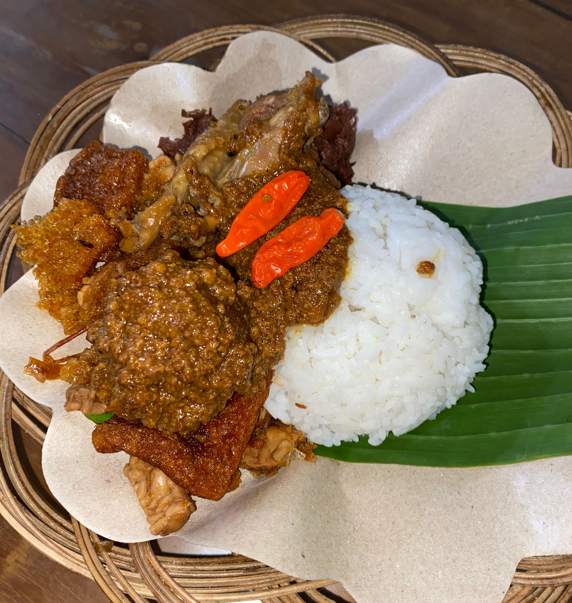
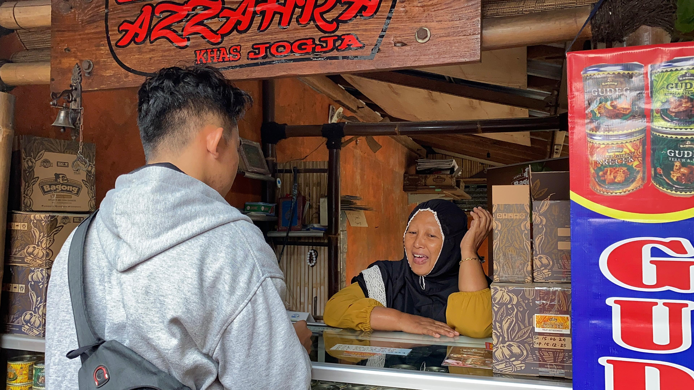

Fakta Menarik Gudeg


1. Gudeg Bagong: Inovasi dalam Kaleng
Salah satu tempat gudeg terkenal adalah Gudeg Bagong. Terkenal dengan cita rasanya yang manis dan gurih. Terobosan besarnya adalah pengemasan dalam kaleng.
2. Gudeg Yu Narni: Resep Sejak 1940
Sudah ada sejak tahun 1940, kualitas gudeg di sini sangatlah terjaga. Keunikannya terletak pada varian "Gudeg Kering" yang tahan hingga 24 jam.